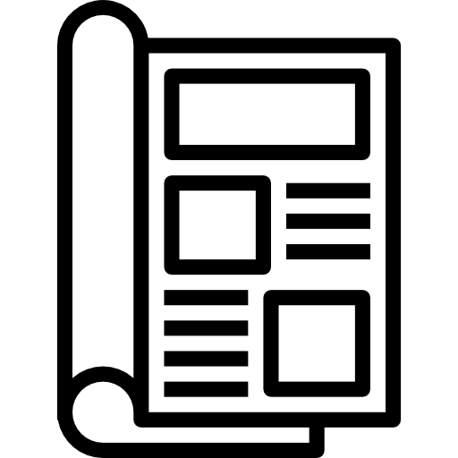

Subscribe
Current issue
Subscribe
About
Craftly

This is a short blurb for the main story of the latest issue of crafty magazine, offering a taster of the article content.
Current issue
The Age of the Mask
Sustainable Sewing: Fabrics
Nothing but Notions
Fiber Artist Feature
Spring Pattern Review
Designer Focus: Elbe Textiles
Issue 107